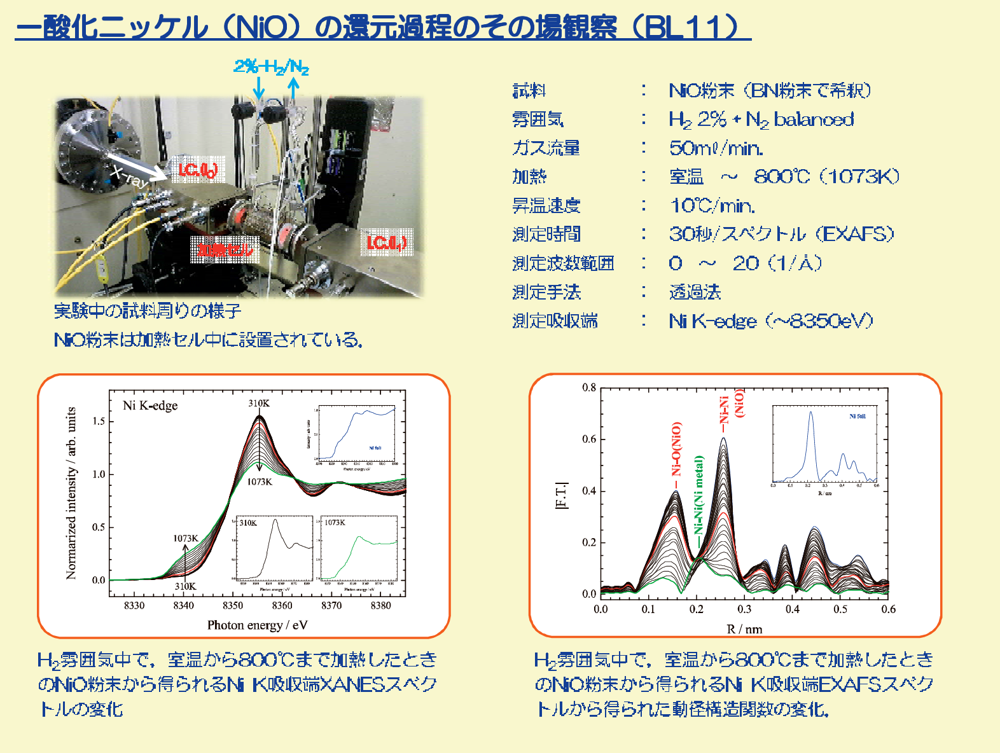

銅（Cu）の価数を調べる
Cu、Cu₂O、CuOのXANESスペクトルを比較した測定事例。
測定事例の詳細を見る ›九州シンクロトロン光研究センター
SAGA-LS XAFS Portal試作サイト（正式公開前）｜ Ver. 0.2.2
元素の価数・化学状態・局所構造を調べる放射光分析技術を紹介します。
XAFSスペクトル模式図（実測データではありません）
Cu、Cu₂O、CuOのXANESスペクトルを比較した測定事例。
測定事例の詳細を見る ›
加熱・還元に伴うNiの化学状態と局所構造の変化を追跡した事例。
測定事例の詳細を見る ›
有明海産海苔に含まれる鉄や亜鉛のXANES測定事例。
測定事例の詳細を見る ›テンダー・硬X線XAFS
リン・硫黄などの軽元素から遷移金属まで
詳細情報（準備中）高エネルギーXAFS
高エネルギー領域の吸収端を対象とした測定
詳細情報（準備中）各項目の詳細ページは準備中です。